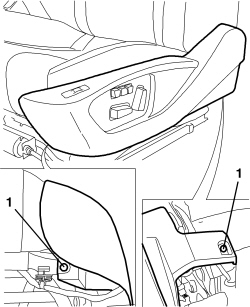
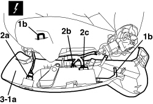
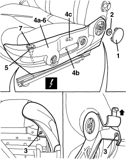

7045A43 FRONT SEAT EXTERIOR GUARD (ONE), LEFT OR RIGHT - R.R
- Path
- Procedures > 70 FITTINGS > 7045 FRONT SEATS > 7045A FRONT SEAT ASSEMBLY > 7045A43 FRONT SEAT EXTERIOR GUARD (ONE), LEFT OR RIGHT - R.R
- Kind
- repair procedure (removal / refitting; the operation number is the code)
- Applies to
- all engines; all production periods
- Interactive page
- https://sloeber94.github.io/elrnDB-aBrrSpdr/en/#/946004141
Applies to: all engines; all production periods; only with equipment: Electric seats
 Removing
Removing
 Refitting
Refitting- Raise the seat until it is in the end of travel position.
Op. 7045A10 FRONT SEAT (ONE), LEFT OR RIGHT - R.R.
1. Loosen outer guard bolts.

Applies to: all engines; all production periods; only with equipment: Electric seats
1. Move outer guard (1a), releasing internal retainers (1b).
2. Detach electrical connections (2a) (2b) (2c).
Description | Component |
|---|---|
DRIVER'S SEAT HEATER SWITCH | |
PASSENGER SEAT HEATER SWITCH | |
DRIVER SIDE SEAT MOVEMENT CONTROLS | |
PASSENGER SIDE SEAT MOVEMENT CONTROLS |
3. Recover the outer guard.
- If necessary, remove the heater switch and the control unit.
Op. 7045M10 FRONT SEAT HEATING SYSTEM SWITCH, LEFT OR RIGHT - R+R
Op. 7045J36 SEAT MOVEMENT ECU R R FOLLOWING ELECTRICAL CIRCUIT CHECK

Applies to: all engines; all production periods; only with equipment: Electric seats
Refitting
Removing- Check that the outer guard is not damaged.
Op. 7045J36 SEAT MOVEMENT ECU R R FOLLOWING ELECTRICAL CIRCUIT CHECK
Op. 7045M10 FRONT SEAT HEATING SYSTEM SWITCH, LEFT OR RIGHT - R+R
- Secure the electrical connections.
- Position the outer guard and attach the internal retainers.
- Tighten the outer guard bolts.
Op. 7045A10 FRONT SEAT (ONE), LEFT OR RIGHT - R.R.
- Lower the seat in the correct position.
Applies to: all engines; all production periods
Removing
Refitting- Raise the seat until it is in the end of travel position.
Op. 7045A56 DRIVER'S SEAT HEIGHT ADJUSTMENT DEVICE CONTROL LEVER - R.R
Op. 7045A33 CONTROL LEVER FOR DEVICE TO ADJUST FRONT SEAT SWINGING - RR
1. Remove the cover, releasing the internal retainers.
2. Release the retainer.
3. Undo outer guard bolts.
4. Move outer guard (4a), releasing internal retainers (4b) and (4c).
5. Detach the electrical connection for the backrest control switch.
Description | Component |
|---|---|
DRIVER SIDE SEAT MOVEMENT CONTROLS | |
PASSENGER SIDE SEAT MOVEMENT CONTROLS |
6. Recover the outer guard.
7. If necessary, remove the backrest control switch.
Op. 7045J60 FRONT SEAT BACKREST ANGLE CONTROL SWITCH (ONE), LEFT OR RIGHT - R.R.

Applies to: all engines; all production periods
Refitting
Removing- Check that the outer guard is not damaged.
Op. 7045J60 FRONT SEAT BACKREST ANGLE CONTROL SWITCH (ONE), LEFT OR RIGHT - R.R.
- Secure the electrical connection for the backrest control switch.
- Position the outer guard and attach the internal retainers.
- Tighten the outer guard bolts.
- Attach the retainer.
- Position the cover and attach the internal retainers.
Op. 7045A33 CONTROL LEVER FOR DEVICE TO ADJUST FRONT SEAT SWINGING - RR
Op. 7045A56 DRIVER'S SEAT HEIGHT ADJUSTMENT DEVICE CONTROL LEVER - R.R
- Lower the seat to the correct position.
Topics linked from this page (10)
- 7045A10 FRONT SEAT (ONE), LEFT OR RIGHT - R.R.
- 7045A33 CONTROL LEVER FOR DEVICE TO ADJUST FRONT SEAT SWINGING - RR
- 7045A56 DRIVER'S SEAT HEIGHT ADJUSTMENT DEVICE CONTROL LEVER - R.R
- 7045J36 SEAT MOVEMENT ECU R R FOLLOWING ELECTRICAL CIRCUIT CHECK
- 7045J60 FRONT SEAT BACKREST ANGLE CONTROL SWITCH (ONE), LEFT OR RIGHT - R.R.
- 7045M10 FRONT SEAT HEATING SYSTEM SWITCH, LEFT OR RIGHT - R+R
- H066 DRIVER'S SEAT MOVEMENT CONTROLS
- H067 PASSENGER SEAT MOVEMENT CONTROLS
- I065 DRIVER'S SEAT HEATING SWITCH
- I066 PASSENGER SEAT HEATING SWITCH
Topics that link to this page (25)
- 7045A18 FRONT SEAT BACKREST ASSEMBLY (ONE), LEFT OR RIGHT - R.R.
- 7045A36 DRIVER'S SEAT MANUAL HEIGHT ADJUSTMENT DEVICE - R.R
- 7045A55 MANUAL DEVICE TO ADJUST FRONT SEAT ANGLE - R.R.
- 7045A86 FRONT SEAT FRAME (ONE), LEFT OR RIGHT, R.R.
- 7045A87 FRONT SEAT BACKREST FOLDING DEVICE WITH FLEXIBLE CABLES, LEFT OR RIGHT - R.R. WITH FRONT SEAT REMOVED
- 7045D18 FRONT SEAT CUSHION SPRINGING (ONE), LH OR RH - R R
- 7045D20 FRONT SEAT CUSHION COVER, LEFT OR RIGHT - R.R.
- 7045D21 FRONT SEAT CUSHION COVER, LEFT OR RIGHT - R.R. WITH SEAT REMOVED
- 7045J13 MICROSWITCH CONTROLLING SLIDING OF FRONT SEAT FOR ACCESS TO REAR SEATS - R.R.
- 7045J28 FLEXIBLE SHAFT FROM MOTOR TO REDUCTION MECHANISM FOR FRONT SEAT ANGLE ADJUSTMENT (ONE), LEFT OR RIGHT - R.R.
- 7045J34 FRONT SEAT BACKREST ANGLE MOTOR, LEFT OR RIGHT - R.R. FOLLOWING ELECTRICAL WIRING CHECK
- 7045J35 REDUCTION MECHANISM FOR FRONT SEAT TILTING MOTOR (ONE), LEFT OR RIGHT - R.R.
- 7045J36 SEAT MOVEMENT ECU R R FOLLOWING ELECTRICAL CIRCUIT CHECK
- 7045J55 FLEXIBLE SHAFT FROM MOTOR TO REDUCTION MECHANISM FOR FRONT SEAT BACKREST TILTING (ONE), LEFT OR RIGHT - R.R.
- 7045J56 REDUCTION MECHANISM FOR FRONT SEAT BACKREST ANGLE MOTOR (ONE), LEFT OR RIGHT - R.R.
- 7045J60 FRONT SEAT BACKREST ANGLE CONTROL SWITCH (ONE), LEFT OR RIGHT - R.R.
- 7045M10 FRONT SEAT HEATING SYSTEM SWITCH, LEFT OR RIGHT - R+R
- 7045M22 HEATER PAD FOR FRONT SEAT CUSHION, LEFT OR RIGHT - R.R. FOLLOWING ELECTRICAL CIRCUIT CHECK
- 7065A34 PASSENGER PRESENCE SENSOR ON FRONT SEAT FOR INDICATING SEATBELT UNFASTENED R R
- E2535 CONTROLS LIGHTING - WIRING DIAGRAM
- E2535 CONTROLS LIGHTING - COMPONENT LOCATION
- E3075 HEATED SEATS - WIRING DIAGRAM
- E3075 HEATED SEATS - COMPONENT LOCATION
- E3075 HEATED SEATS - WIRING DIAGRAM
- E3075 HEATED SEATS - COMPONENT LOCATION